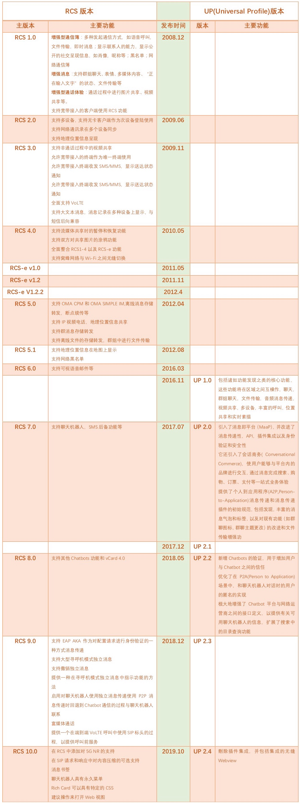
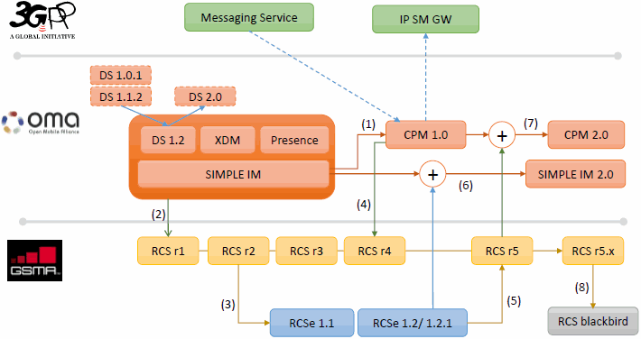
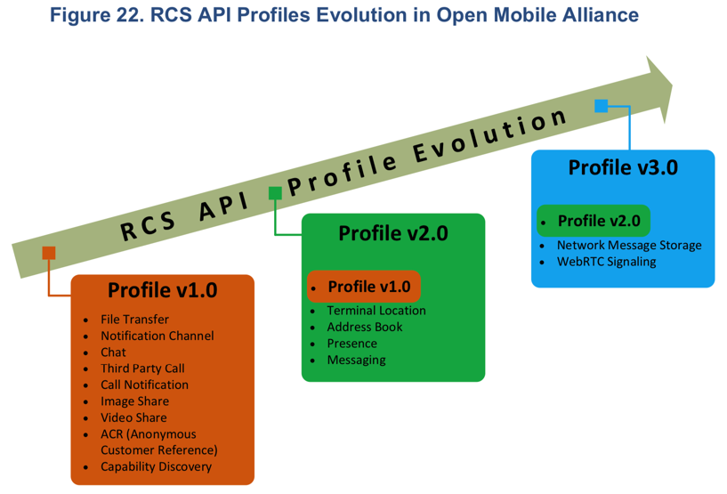
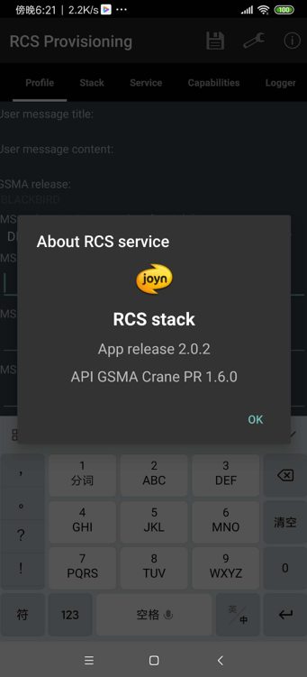
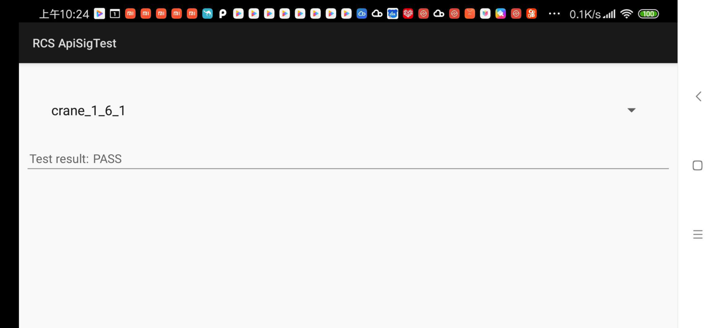
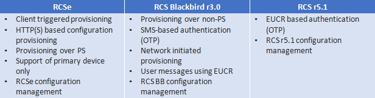
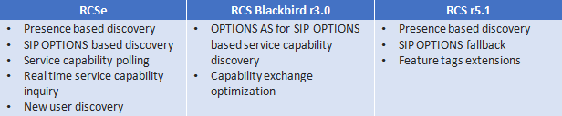

RCS版本
关于RCS的总体版本演化，摘录之前在
已整理的

RCS协议版本演化
- Evolution of GSMA RCS standards
- 
RCS的API的版本
RCS的API是OMA组织定义的
- OMA定义的RCS的API的版本历史
- 图
- RCS API Profiles Evolution in Open Mobile Alliance
- 
- RCS API Profiles Evolution in Open Mobile Alliance
- 文字版
- Profile v3.0
- Network Message Storage
- WebRTC Signaling
- Profile v2.0
- Terminal Location
- Address Book
- Presence
- Messaging
- Profile v1.0
- File Transfer
- Notification Channel
- Chat
- Third Party Call
- Call Notification
- Image Share
- Video Share
- ACR (Anonymous Customer Reference)
- Capability Discovery
- Profile v3.0
- 图
RCS的名词关系：Albatros、Blackbird、Crane、joyn
目前理解：
- RCS版本=API 版本
- Albatros
- =RCS 5.1
- Blackbird
- = RCS 5.2
- Crane
- = API 1.6.0 / 1.6.1
- RCS的core的apk -> About中看到
API GSMA Crane PR 1.6.0- 
- ApiSigTest = API签名测试 中是：
crane_1_6_1- 
- RCS的core的apk -> About中看到
- = API 1.6.0 / 1.6.1
- Albatros
根据 rcsjta/Branches.md at wiki · android-rcs/rcsjta 最新理解：
- RCS分2部分
- RCS 的core 或stack：RCS stack的版本
- TAPI=Terminal API：终端设备API接口 的版本
- 目前已发布的版本
- 主分支
- master
- RCS Crane = RCS Crane PR (Priority Release)：RCS 5.3
- TAPI 1.6.1
- tapi_1.6.1
- RCS Blackbird：RCS 5.30
- TAPI 1.6.1
- tapi_1.5.1
- RCS Blackbird：RCS 5.0 和 5.1 + RCS-e 1.2.2
- TAPI 1.5.1
- Albatros
- RCS Albatros 2.0
- Albatros TAPI
- master
- 临时分支
- securitymodel3
- RCS Blackbird：RCS 5.0 和 5.1 + RCS-e 1.2.2
- TAPI 1.5
- 安全模型
- cpm
- tapi_0.9.0
- securitymodel3
- 主分支
- RCS相关概念
- 协议版本
- Albatros=RCS 5.1
- Blackbird= RCS 5.2
- RCS Blackbird
- 目的：在 RCSe - RCS r5.1 之间的过渡
- 功能对比
- 图
- 
- 文字
- RCSe
- 关注重点：简单的IP聊天
- RCS r5.1
- 关注重点：聚合IP通讯服务
- converged IP communication service
- 关注重点：聚合IP通讯服务
- RCSe
- 图
- 功能对比
- 发展经历了
- RCS 3.0
- RCS 4.0
- 包含功能
- 基于IP的聊天功能
- 基于HTTP的文件传输
- 兼容旧消息
- 支持多设备
- 基于SIP OPTIONS的服务发现
- 增强的Provisioning功能
- 内容分享
- 基于WiFi的语音电话
- joyn Blackbird支持情况
- 已认证
- Samsung
- LG
- Nokia
- Microsoft
- Sony
- HTC
- Jibe Mobile
- Huawei
- TCL
- 支持的设备
- 运营商？
- Germany的Deutsche Telekom
- Vodafone Germany的多个设备
- HTC One M7
- M8 Mini
- LG70
- Samsung S4
- Samsung S4 Mini
- Samsung S5
- Sony Xperia Z1
- 运营商？
- 已认证
- 目的：在 RCSe - RCS r5.1 之间的过渡
- RCS Blackbird
- Crane
- 基于
- RCS 5.3
- RCC.61 Common Core feature set
- 是Blackbird的升级版
- API
- TAPI 1.6.0
- TAPI 1.6.1
- 主要更新
- Common Message Store- for the backup and restoration of messages and an enabler for a multi-device experience.
- Voice and Video calling over Wi-Fi
- Green Button Promise for voice and video
- Audio Messaging
- Security against malware
- 基于
- RCS extensions
- Applications adding functionality to native devices utilising RCS APIs
- RCS领域内的Provisioning
- Provisioning
- 直译：
- n. 准备金提取
- v. 供应补给品（provision的ing形式）
- provision
- 直译：
- n. 规定；条款；准备；[经] 供应品
- vt. 供给…食物及必需品
- 直译：
- provision
- 直译：
- 可以理解为：服务service（的供给）
- -》提供（RCS）服务
- 最新：正确翻译应该是：
Provisioning=开通=开通服务- 开通RCS服务，需要各种条件
- 需要进行各种参数配置，才能开通RCS服务
- 开通RCS服务，需要各种条件
- Configuration Provisioning
- 是一个过程
- 获取配置
- 用于让支持了RCS的设备，发现和知道相关服务提供方的对应的配置信息
- 获取配置
- 目的
- RCS设备，获取了配置参数（configuration parameters）后，才方便访问IMS core和RCS的服务
- 何时、次数
- 在用户注册到IMS core之前，有且要做1次Configuration Provisioning
- 配置参数configuration parameters
- 包含
- 各种MO=Management Objects
- 包含
- 设备接入（用于访问configuration server）对比
- RCSe：只支持PS（数据包交换 ）网络 方式
- RCS Blackbird：支持多种设备
- 接入设备类型
- 带SIM卡的
- 不带SIM卡的
- 举例
- 用户的主设备，通过WiFi接入
- 用户的不带（或忽略是否有）SIM卡的从设备
- 接入设备类型
- 设备接入方式=Provisioning方式
- PS网络
- 配置服务器 认证设备（是否有效）有多种方式
- 基于IMS的认证
- 基于用户IP地址的认证
- 配置服务器 认证设备（是否有效）有多种方式
- WiFi网络
- 特殊性：无法通过上述的IMS或IP地址认证
- 因为设备往往是私有IP地址
- 进一步：从设备无法获取（主设备的）IMSI
- 因为设备往往是私有IP地址
- 认证方式
- OTP认证
- 逻辑：配置服务器生成OTP，通过SMS，发送给主设备
- 注：
- RCS 5.1中，也可通过EUCR去申请获取OTP
- 通过IMS网络返回的XML的SIP消息的body中包含OTP
- RCS 5.1中，也可通过EUCR去申请获取OTP
- OTP认证
- 特殊性：无法通过上述的IMS或IP地址认证
- PS网络
- 更新Provisioning配置
- 背景：configuration server也可以触发让RCS客户端进行配置初始化
- 实现方式
- SMS
- EUCR
- 实现方式
- 常见场景
- 服务配置更改后
- RCS客户端版本升级后
- 用户设备中（重新）激活被禁用的RCS客户端
- 背景：configuration server也可以触发让RCS客户端进行配置初始化
- 是一个过程
- Provisioning
- Service Capability Discovery=服务能力发现
- 是什么：一个过程
- 寻找发现一个地址本里的联系人，是否具有对应能力
- 以此去确定其是否是一个RCS的用户
- 寻找发现一个地址本里的联系人，是否具有对应能力
- 实现方式
- 根据技术不同和使用场景可分2种
- 基于Presence
- 基于SIP OPTIONS
- 根据技术不同和使用场景可分2种
- 不同协议对比
- 
- 是什么：一个过程
- RCS UP
- 支持功能
- capability discovery能力发现
- 实现不同区域间互操作
- chat聊天
- group chat群聊
- file transfer文件传输
- audio messaging语音消息
- video share视频分享
- multi-device多设备支持
- enriched calling增强电话
- location share位置分享
- live sketching=Live Sketch Sharing
- Sketch=素描？ = 涂鸦？
- capability discovery能力发现
- 核心
- MaaP=Messaging as a Platform
- 支持
- RCS business messaging=RCS商业消息
- Rich Cards=富媒体卡片
- privacy control=隐私控制
- spam protection=垃圾过滤防护
- 支持
- MaaP=Messaging as a Platform
- 支持功能
- MaaP和Chatbot
- RCS UP 2.0协议支持Chatbot平台
- 不同厂家会实现自己的API
- 举例
- 三星的MaaP API
- 举例
- 不同厂家会实现自己的API
- 相关协议是
- RCS UP 2.0
- Section 15 and Annex A
- 针对：Chatbot product manager and designer
- Section 15 and Annex A
- RCS 7.0
- Section 3.6.10
- 针对Chatbot developer
- Section 3.6.10
- RCS UP 2.0
- RCS UP 2.0协议支持Chatbot平台
- 相关理解
- RCS重点在于：Advanced Communications （更）高级的通讯
- 和谁对比：
- 传统的 普通的通讯
- 早期：基于文本的SMS消息
- 后来的：多媒体消息MMS
- 传统的 普通的通讯
- 高级在于支持更多功能
- 如前所述的 群聊，视频分享，位置分享等等
- 早期通讯方式所不支持（也无法支持）的功能
- 如前所述的 群聊，视频分享，位置分享等等
- 和谁对比：
- RCS重点在于：Advanced Communications （更）高级的通讯
- 协议版本